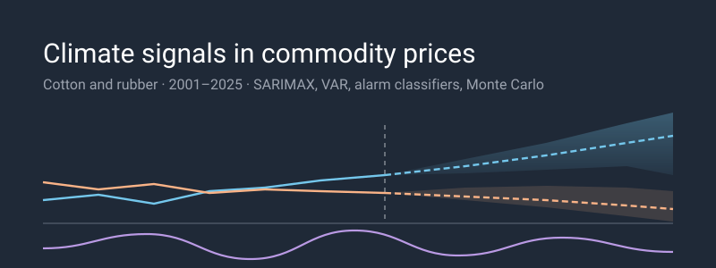
Same Signal, Opposite Signs: Climate Risk in Cotton and Rubber Prices
A graduate capstone sponsored by Nike
Problem: Nike buys cotton and natural rubber from two dozen countries. Climate shocks move both prices, but nobody could say which shocks, how far ahead, or by how much, so hedging and forward-buying decisions were made on instinct.
What I built: A 3-layer model over a 300-month panel of prices, ERA5 climate reanalysis, ENSO indices and disaster counts: SARIMAX/VAR/Granger for the causal story, gradient-boosted and logistic classifiers for a 3/6/9-month spike alarm, and a Monte Carlo scenario engine for planning ranges.
Key result: The same El Niño shock moves the two commodities in opposite directions: rubber by +36.9% over 12 months, cotton −10.9%. Any pooled “climate risk” model is wrong by construction. The alarm shows real skill for rubber (AUC 0.775, Brier skill +0.182) but is weak for for cotton. The most useful thing I found is a negative result: the relative alarm rule everyone reaches for first goes silent exactly when the risk is highest.
The interactive dashboard runs every model from this post in your browser: drag a severity dial through the scenario grid, move the alarm threshold and watch the confusion counts recompute, and replay the procurement backtest at your own spend levels.
Climate-driven price risk for cotton and natural rubber — a medallion ingestion
pipeline, SARIMAX and VAR econometrics, walk-forward spike classifiers, and a Monte Carlo scenario
engine. Run locally: pip install -e . && make features
1. The question behind the question
The obvious question, “does climate affect commodity prices?”, is not useful - of course it does. A procurement team already believes that. What they can’t do is act on it, because acting requires three specific numbers that “yes” doesn’t contain: which driver, at what lag, and by how much.
The project was scoped to the decisions a sourcing team actually makes:
- Do I forward-buy this quarter to avoid near-term price impacts?
- What price goes in next year’s budget considering this uncertainty?
- How wrong could that number be?
Those questions have different shapes, and they don’t collapse into one model. They became 3 layers:
3 layers over one panel, but the dashed arrow is the part that matters. Layer 3 is Layer 1’s SARIMAX specification refit, so when a scenario shifts a driver and the price moves, it moves because of Layer 1’s coefficient. That’s arithmetic, not corroboration. Only Layer 2 can vote independently, and section 7 leans on that distinction.
The panel underneath is 300 months, 2001-01 through 2025-12, joined monthly from four public sources: ERA5 reanalysis for temperature, precipitation and drought balance; NOAA’s Oceanic Niño Index for ENSO state; EM-DAT for disaster counts; and the World Bank Pink Sheet for prices. Climate enters as anomalies (z-scores against each region’s own climatology) so Xinjiang Sumatra can sit in the same regression without one drowning the other. Each driver carries lags at 1, 2, 3, 4 and 6 months plus 3- and 6-month rolling means, because a drought doesn’t reach a harvest instantly.
Getting there is a Delta Lake medallion pipeline, which matters less for the findings than for the fact that any of this can be re-run:
That caching rule is worth highlighting, because it cost me a rebuild. Bronze skips the download when the file is already there, which is exactly what you want for a reproducible pipeline, and it means a stale source URL never raises anything. The Pink Sheet download was pinned to a document ID the World Bank froze in 2021; it still resolves, still parses, and still returns a clean monthly series that simply stops in 2024-12. Nothing in the pipeline can tell that apart from a source that has no newer data.
Re-pointing at the current document brought prices through 2026-06 and meant refitting all three layers. Every number in this post moved slightly; all six scenario signs, and every qualitative finding, held.
One caveat belongs up front rather than in a limitations section, because it shapes everything below: the panels are region-matched to where each material is actually grown, and cotton’s climate coverage is Xinjiang only, roughly 20% of world production. Rubber’s covers mainland Southeast Asia and Sumatra, which is most of the crop. Cotton’s models are working with one-fifth of the picture, blind to the US, Brazil, India and West Africa.
2. A pooled model is wrong by design
The first result reframed the rest of the project.
Relative to a baseline scenario, a strong El Niño raises rubber’s simulated 12-month median price by +36.9% and pushes cotton’s down 10.9%. It isn’t a one-off, either. Every scenario splits the same way:
| Scenario | Cotton, +12m vs baseline | Rubber, +12m vs baseline |
|---|---|---|
| Drought | −22.8% | +11.3% |
| El Niño | −10.9% | +36.9% |
| Flood | +20.5% | −19.4% |
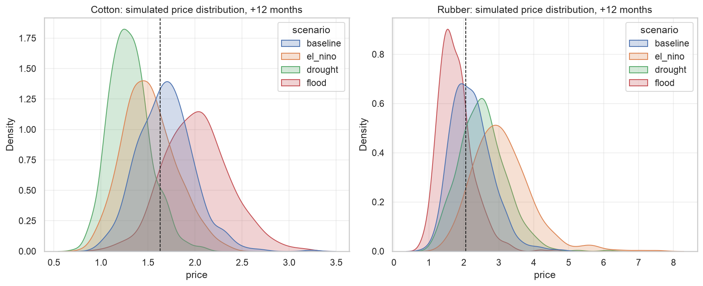
Six cells, six sign disagreements. A single “climate risk” model pooled across both materials would average those effects toward zero and report that climate doesn’t matter much, which is a confident, well-validated, but completely wrong answer. To counteract this, each commodity gets its own driver set, its own lag structure, and its own horizons. The only shared component is the pipeline.
There’s a second asymmetry worth stating, because it changes the modelling target. A manufacturer that buys these materials is structurally short both: only upward moves hurt. A symmetric price forecast spends half its capacity on the half of the distribution nobody is exposed to. That’s why Layer 2 predicts spikes rather than prices.
3. Climate leads price by about two quarters
Before modelling returns, the series have to justify it. Augmented Dickey-Fuller puts cotton’s price level at −3.36 (p=0.012) and rubber’s at −2.82 (p=0.056). Rubber fails to reject a unit root at 5%, cotton barely clears it, while the log returns reject overwhelmingly (−5.35 and −12.84). So everything downstream models returns: SARIMAX(0,0,1) for cotton, SARIMAX(1,0,0) for rubber, each with a curated exogenous set.
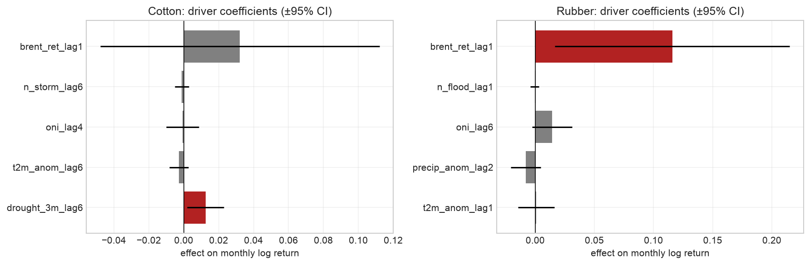
For rubber, the causal test is clean. ONI leads returns at lag 6 (p=0.006) while the reverse test sits at p=0.45. Rubber returns show no sign of causing El Niño, which is the sanity check you want to see. The SARIMAX coefficient agrees: oni_lag6 is +0.0143 (p=0.094). Two quarters is a lag a procurement team can actually work inside.
For cotton it looks similar and isn’t. Flood counts lead returns at lag 3 (p=0.033), ONI at lag 5 (p=0.050), and then the reverse placebo comes back significant too (p=0.030). Cotton returns cannot cause floods. When a test fires in both directions, it’s describing a shared seasonal or macro confound, not causation. So the cotton Granger evidence is reported as suggestive, not directional, and I don’t lean on it later.
The most interesting coefficient is one I expected to have the opposite sign. drought_3m_lag6 (higher = more rainfall) is +0.0126 (p=0.019) for cotton: wetter anomalies raise prices six months later. Most people (like me) expect a drought to spike cotton prices. In Xinjiang’s heavily irrigated system, the mechanism appears to run the other way: excess rain at the wrong point in the cycle disrupting harvest and quality. The temperature term keeps its negative sign (t2m_anom_lag6 −0.0028), but at p=0.325 it carries no weight, and I don’t give it any.
Rubber is not purely a climate story, and it would be dishonest to imply otherwise. brent_ret_lag1 at +0.1158 (p=0.022) is the largest coefficient in either model: an order of magnitude above the ENSO term. Oil raises the cost of synthetic rubber and drags natural rubber up with it. A meaningful share of what looks like climate predictability is an oil-substitution channel.
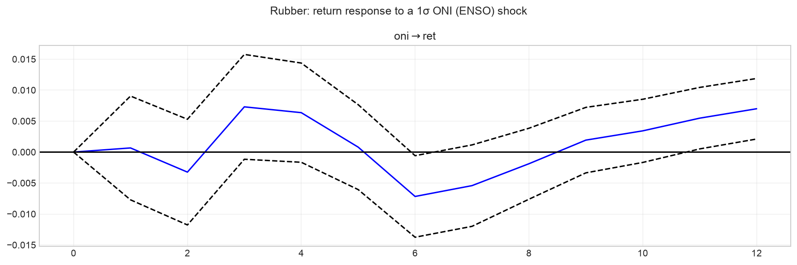
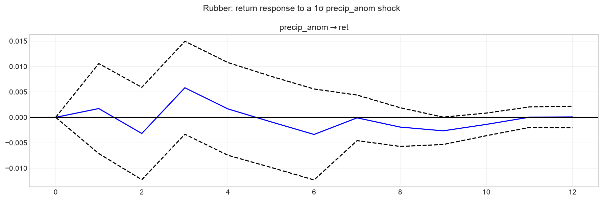
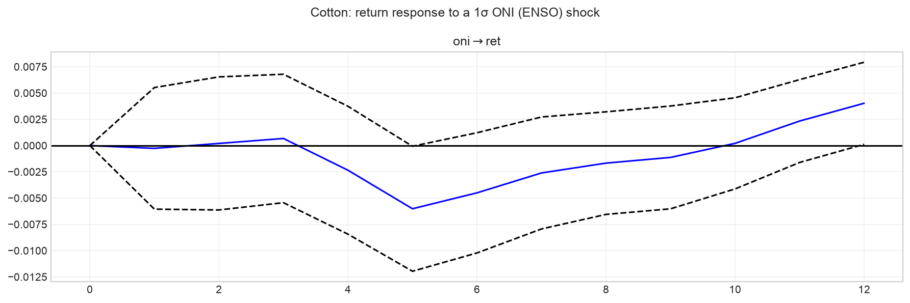
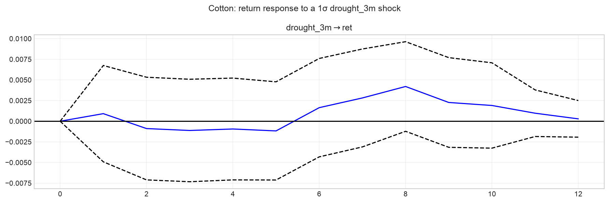
The impulse responses are an honest null. Across VAR(6) for rubber and VAR(8) for cotton, no orthogonalised IRF is distinguishable from zero at any horizon – every confidence band contains it. They’re shown because they corroborate direction, and they are explicitly not used to justify any forecast horizon. Those rest on the Granger lags and the SARIMAX coefficients.
4. The alarm works for rubber — and only at three months for cotton
Layer 2 asks a different question of the same panel: what is the probability the price rises more than 10% at any point in the next h months? The label is a maximum over the window, not the end-to-end change, because a spike that happens and reverses still hits a buyer who had to purchase during it.
Models are scored the way a weather warning is: not on accuracy, but on whether they beat the base rate procurement already knows. Evaluation is walk-forward on an expanding window, out-of-sample from 2016, against an expanding climatology baseline.
| Commodity | h | Model | AUC | Brier skill | Base rate |
|---|---|---|---|---|---|
| Rubber | 9 | Logistic | 0.775 | +0.182 | 56% |
| Rubber | 6 | Logistic | 0.740 | +0.111 | 45% |
| Rubber | 3 | Logistic | 0.642 | −0.000 | 28% |
| Cotton | 3 | XGBoost | 0.622 | +0.030 | 19% |
| Cotton | 9 | XGBoost | 0.573 | −0.001 | 41% |
| Cotton | 6 | XGBoost | 0.562 | +0.017 | 37% |
Climatology sits at AUC 0.47-0.55 throughout, which is what a null should look like. Cotton beyond three months is at or below it, and its logistic Brier skill is outright negative at h=6 (−0.039) and h=9 (−0.100). I don’t recommend acting on the cotton alarm at 6 or 9 months – a negative Brier skill score means you’d have been better off quoting the base rate.
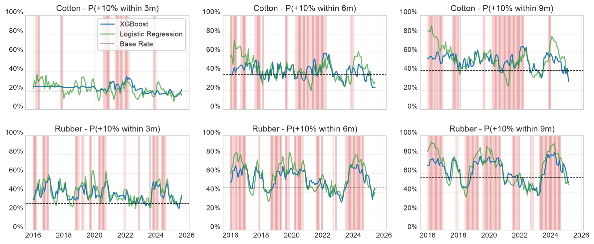
Shaded bands mark months where a +10% move did occur inside the horizon. A useful alarm rises inside the shading and stays low outside it: visibly true for rubber, visibly weak for cotton.
Read every AUC against its own base rate. They climb with the horizon: cotton 19% up to 41%, rubber 28% up to 56%. Rubber’s h=9 skill is real, but a +10% move within nine months is close to rubber’s normal state, so the value of knowing is lower than 0.775 suggests. That gap between skill and usefulness turns out to be the whole story of the next section.
The drivers explain the split. For rubber, SHAP puts three ENSO features in the top four (oni, oni_lag6, oni_lag3) with high ONI pushing the alarm up, the same direction as SARIMAX’s +0.0143, recovered by a different model class on a different target. For cotton, the top driver is mom_6m, six-month price momentum, at mean |SHAP| 0.194, ahead of oni at 0.139. Price momentum outranks every climate feature.
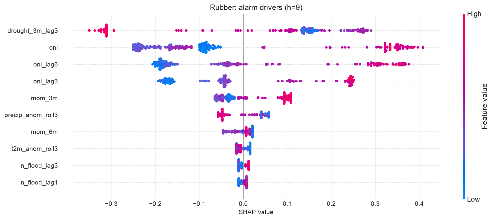
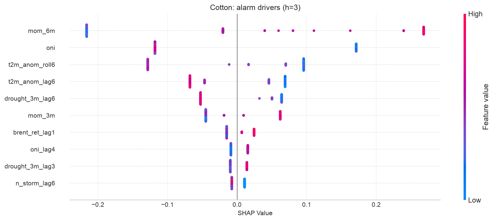
A climate early-warning system whose cotton model is partly a momentum model is a finding, not a bug. With only Xinjiang in view the climate signal is thin, and the model falls back on what the price series says about itself.
Probabilities are conservative and rarely reach 50%, so the alarm fires at 1.25× the historical base rate rather than a fixed cutoff (e.g., “spike risk is elevated 25% above normal.” At that operating point, cotton h=3 crosses at tau=0.24 and fires 54 alarms against 22 real events, catching 13 with 41 false alarms. Rubber h=6 crosses at tau=0.56: 55 alarms, 51 events, 34 hits, 21 false, a 67% hit rate.
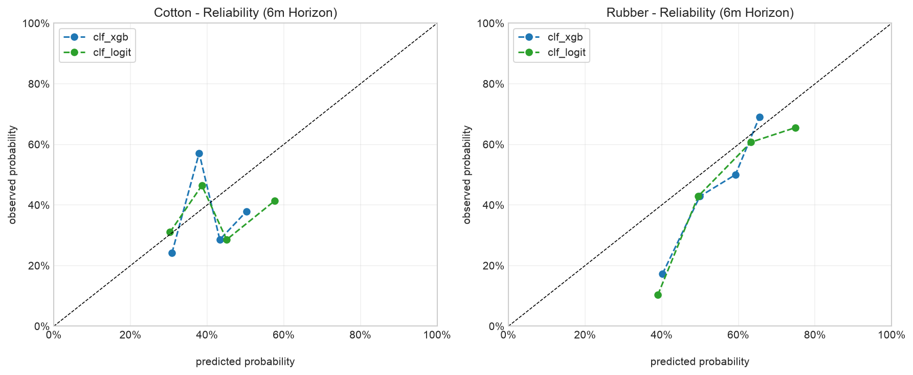
That cotton row is noisy on purpose. The rule is tuned to catch spikes, not to avoid crying wolf, which is defensible only because forward-buying is cheap relative to a missed +10% move. A team with expensive hedges would want a higher multiple.
5. The finding I did not go looking for
Two results that started as footnotes turned out to be the same result, and it’s the most useful thing in the project.
Rubber’s h=9 alarm has the study’s best AUC (0.775) against a 56% base rate. Multiply that base rate by 1.25 and the firing threshold lands at 70%. A well-calibrated model asked about a coin-flip event essentially never emits a 70% probability. The skill is real and the alarm is nearly mute.
Then the historical stress test made the same point, harder. I refit everything through 2009-12 only and replayed the 2010-11 commodity spike, the most extreme cotton move in a century, using the actual climate drivers of those months.
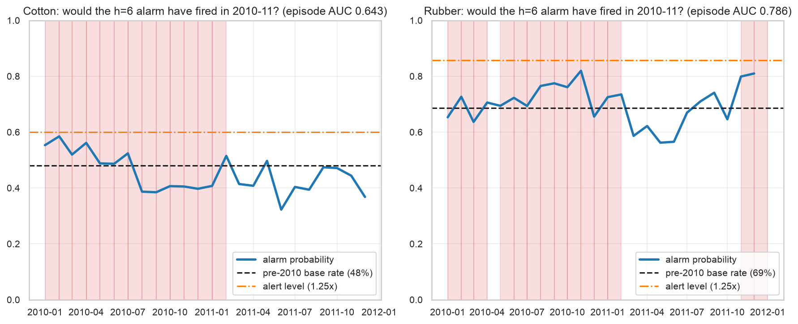
The alarm fired 0 times in 24 months, for both commodities. But for opposite reasons, and the difference matters:
- Rubber’s replay ranked the episode well. Episode AUC 0.786, peaking at 0.820 in November 2010. It never fired because the pre-2010 base rate was 69%, putting the 1.25x bar at 0.858, and the peak missed it by 0.038. The signal was there. The rule suppressed it.
- Cotton’s replay ranked it weakly. Episode AUC 0.643, peak 0.585 against a 0.600 bar. Closer in absolute terms, but on a near-uninformative ranking: firing would have been luck, not foresight.
Both are one mechanism: multiplying a high base rate by a constant produces a threshold the model cannot reach. The relative rule is sound for rare events (cotton at h=3, base rate 19%, threshold 0.24, perfectly reachable) and it degrades precisely as the event becomes common, which is precisely when a buyer most needs the warning.
The fix is the alarm rule, not the model. A fixed threshold, or one that adapts sub-linearly to the base rate, would have fired for rubber in 2010-11. A naive post-mortem would have blamed the data or the model; the operating rule was vetoing a model that had the signal.
6. What to actually budget
Layer 3 turns all of it into numbers you can put in a plan. The SARIMAX spec is refit, residuals are bootstrapped, and 10,000 paths run 12 months forward under four named scenarios.
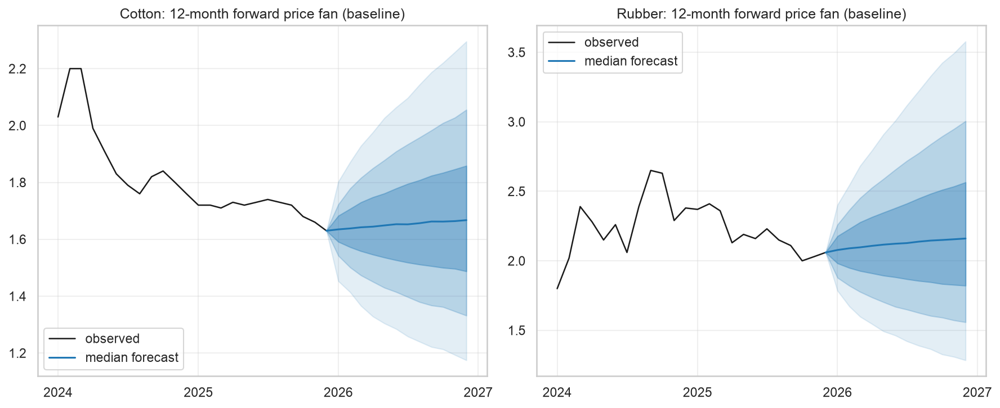
Even the baseline is wide, and the width is the point. At 12 months the 95% band spans roughly −30% to +39% for cotton and −40% to +65% for rubber around the median. Scenarios shift that distribution; they don’t narrow it. Any single-number forecast at this horizon is false precision.
The planning numbers, from today’s anchor:
- Rubber under a strong El Niño. Six-month probability of a +10% move rises from a 35% baseline to 69%, and to 85% at twelve months. Budget for +61% at p95 within six months, +118% at twelve.
- Cotton’s dangerous scenario is flood, not drought. Six-month spike risk of 54% against a 23% baseline — while drought suppresses it to about 3%. At p95, plan for +34% at six months, +62% at twelve.
That cotton line is the practical payoff of the counterintuitive coefficient in section 3. A team hedging cotton against drought is hedging the wrong tail.
Every scenario above starts from a 2025-12 forecast origin — the last month the full modelling panel covers, since the World Bank annual indicators and one BLS producer price series both end there. Observed prices in the charts run through 2026-06, so the first six months of every forecast band already have actuals sitting on top of them. That’s deliberate and it’s free out-of-sample evidence, but read it as such: the model did not see those months.
The stress test is credible for rubber and humbling for cotton. Replaying 2010-11 from a 2009-12 fit, rubber’s realised path stayed inside the 95% band in 92% of months. Cotton managed 63% — the peak of that spike escaped even the widest band.
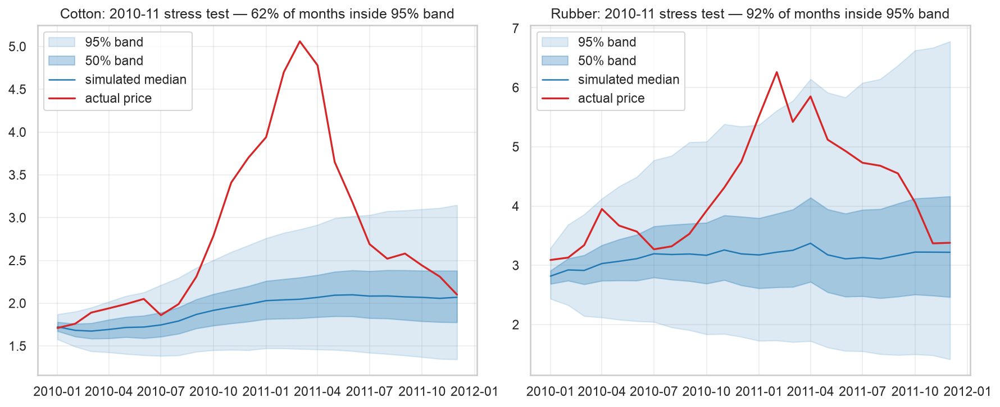
Bands built from bootstrapped historical residuals cannot anticipate a move without precedent in the sample. Tail percentiles are planning aids, not guarantees, and 2010-11 is the reminder.
Converting alarms to money: forward-buying on the XGBoost alarm at the 1.25× rule would have saved 2.1% of rubber procurement cost at h=6 and 1.9% at h=3, against 5.1% under perfect foresight at h=6. Cotton is negligible (0.5% at h=3, 0.4% at h=6), consistent with its weaker skill. These are directional figures, not a business case: they ignore inventory carrying cost, liquidity and counterparty limits.
7. Where this breaks
The layers were built to be redundant: different targets, different methods, different windows, so that an agreement would mean something. But they are not equally independent, and it would be easy to over-claim. Layer 3’s engine is the Layer 1 SARIMAX spec, refit. When a scenario shifts a driver and the price moves, it moves because of Layer 1’s coefficient. That’s arithmetic, not confirmation. Only Layer 2 is actually independent: different model class, different target, sharing nothing but the input panel.
Applying that test honestly splits the two headline findings:
- “ENSO drives rubber” survives it. Layer 1 has the Granger lag and the coefficient; Layer 2 independently puts three ENSO terms in its top four with the same sign. Two methods sharing only an input panel agree on the material, the direction, and roughly the lag. This is the strongest result in the study.
- “Wet is bullish for cotton” is corroborated, but weakly. The alarm model does now lean on
drought_3m_lag6— it ranks 5th among cotton’s drivers at mean |SHAP| 0.057. That is actual cross-method agreement rather than one coefficient carrying the claim alone. Two things keep it short of settled: a feature ranking inside a weak model is weak corroboration, and cotton’s Granger evidence is non-directional. The mechanism is plausible and now has two methods behind it; the causal claim rests on the mechanism, not on the identification.
- The same signal, opposite signs. El Niño: rubber +36.9%, cotton −10.9% at 12 months. Six scenario cells, six sign disagreements — a pooled model would report that climate doesn’t matter.
- Climate leads price by about two quarters, cleanly for rubber (ONI at lag 6,
p=0.006, reversep=0.45) and non-directionally for cotton. - The rubber alarm is skillful — AUC 0.775, Brier skill +0.182 at h=9 — and worth about 2.1% of procurement cost at h=6. Cotton’s works only at three months.
- A relative alarm rule fails at high base rates. A model that ranked the 2010-11 spike at AUC 0.786 fired 0 of 24 months, because scaling a 69% base rate put the bar at 0.858. The fix is the rule, not the model.
- Cotton’s climate coverage is Xinjiang only, ~20% of world production, and nearly every cotton weakness above descends from it.
Limitations
Cotton’s coverage is the root cause of most of the rest. Weak alarm skill, a model whose top driver is price momentum, a stress test containing only 63% of months — all downstream of seeing one-fifth of the crop. The remedy is data, not method: extending ERA5 coverage to the US, Brazil, India and West Africa is the single highest-value next step.
Only one of three layers is an independent check. Layer 3 inherits Layer 1’s coefficients, so its agreement is arithmetic. A future revision should give the scenario engine a specification not borrowed from the econometrics.
The relative alarm rule is mis-specified at high base rates — diagnosed in section 5, not fixed here.
The most extreme move in a century escaped the 95% band, and the IRFs establish nothing. Neither is a reason to distrust the bands; both are reasons not to treat them as coverage guarantees.
Scope is narrower than the numbers imply. Rubber is partly an oil story (brent_ret_lag1 +0.1158 is the largest coefficient anywhere in the model); the procurement backtest ignores carry cost; and leather and petroleum-derived synthetics are too sparse monthly to model at all.
Closing thought
The result I’d keep if I could keep only one isn’t the +36.9%. It’s that a model can be right and still be silent.
Rubber’s 2010-11 replay had the signal: it ranked the episode at AUC 0.786 and peaked within 0.038 of firing. Everything downstream of the model worked. The thing that failed was a single line of business logic that multiplies a base rate by 1.25, chosen because it was intuitive and never stress-tested at the base rates where it would actually be used. A post-mortem that stopped at “the alarm didn’t fire” would have concluded the data was inadequate and gone looking for more of it.
Most of the effort in a project like this goes into the model. The failure was in the two-line rule sitting on top of it — and it was only visible because the stress test replayed the decision, not just the prediction.
Reproducing this analysis
Everything above runs from one public repository. There is no Databricks dependency, no private package install, and no live API call in the modelling path.
Climate-driven price risk for cotton and natural rubber — a medallion ingestion
pipeline, SARIMAX and VAR econometrics, walk-forward spike classifiers, and a Monte Carlo scenario
engine. Run locally: pip install -e . && make features
From a clean clone:
pip install -e .
make features # bronze -> silver -> gold
python -m src.modeling.train # SARIMAX + walk-forward classifiers
python -m src.modeling.predict # Monte Carlo scenariosEvery figure and number in this post is produced by a cell in one of three notebooks, each ending in a Findings cell whose values trace to a cell output in the same run:
| Notebook | Produces |
|---|---|
modeling_1_econometrics.ipynb |
ADF, Granger, SARIMAX coefficients, IRFs |
modeling_2_early_warning.ipynb |
Skill table, alarm timeline, SHAP, calibration, backtest |
modeling_3_scenarios.ipynb |
Fan charts, scenario shifts, stress test, alarm replay |
Every tunable (driver sets, lags, horizons, the +10% threshold, the 1.25× alarm multiple, hyperparameters) lives in src/config.py, so none of the numbers above are hardcoded in a notebook.
No raw data ships with the repo. Each source carries its own license, and two need care: EM-DAT permits publishing aggregate statistics but not redistribution, and the IMF commodity price series distributed through FRED can’t be republished at all, which is why the prices here come from the World Bank Pink Sheet instead. DATA.md carries the full table, the attribution strings, and instructions for regenerating everything yourself.
The interactive dashboard runs every model in this post in your browser: drag a severity dial through the scenario grid, move the alarm threshold and watch the confusion counts recompute, and replay the procurement backtest at your own spend.
Data sources
- ERA5 reanalysis — Copernicus Climate Change Service (C3S) Climate Data Store, DOI
10.24381/cds.adbb2d47. Licensed CC-BY. - World Bank Commodity Price Data (“Pink Sheet”) — cotton A Index and rubber RSS3, monthly, in $/kg. Licensed CC-BY 4.0.
- NOAA Climate Prediction Center — Oceanic Niño Index. Public domain.
- EM-DAT, the International Disaster Database — Emergency Events Database, UCLouvain / CRED, Brussels, Belgium, accessed 2026-07-25, www.emdat.be. Used as monthly aggregate counts only.
- U.S. Bureau of Labor Statistics via FRED — producer price indices and CPI-U. Public domain.
This began as a graduate capstone project in UNC’s School of Data & Information Science, sponsored by Nike: they set the brief, served as project stakeholder, and we worked with them directly throughout. Teammates built the Streamlit application and the country-level data exploration.
The write-up and dashboard here are my own, and Nike has not reviewed or endorsed this post specifically. No proprietary Nike data appears anywhere in the project. Every input is one of the public sources listed above.